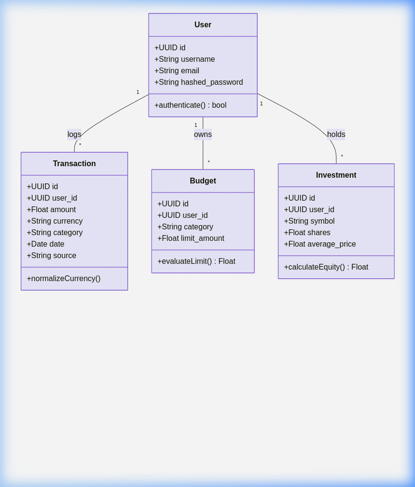
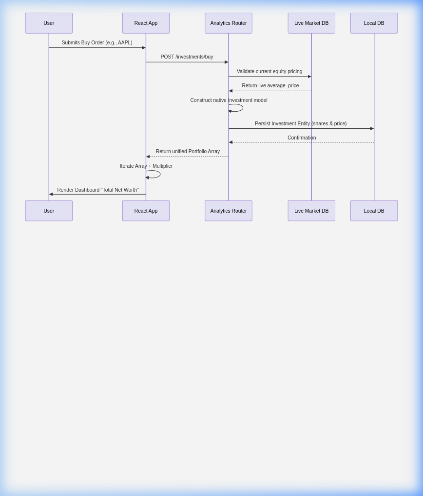
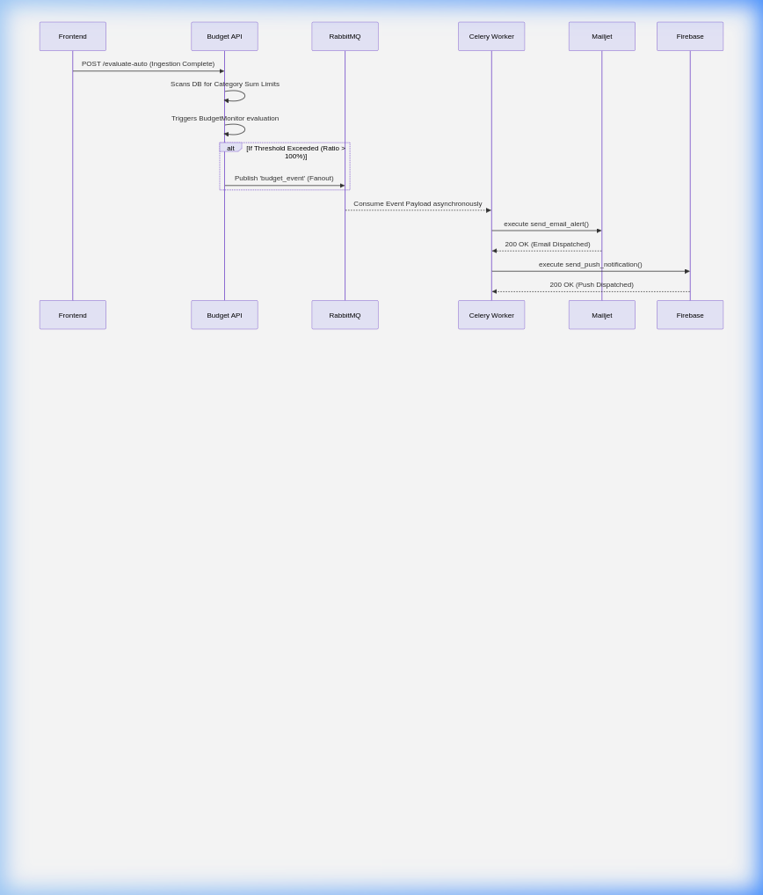
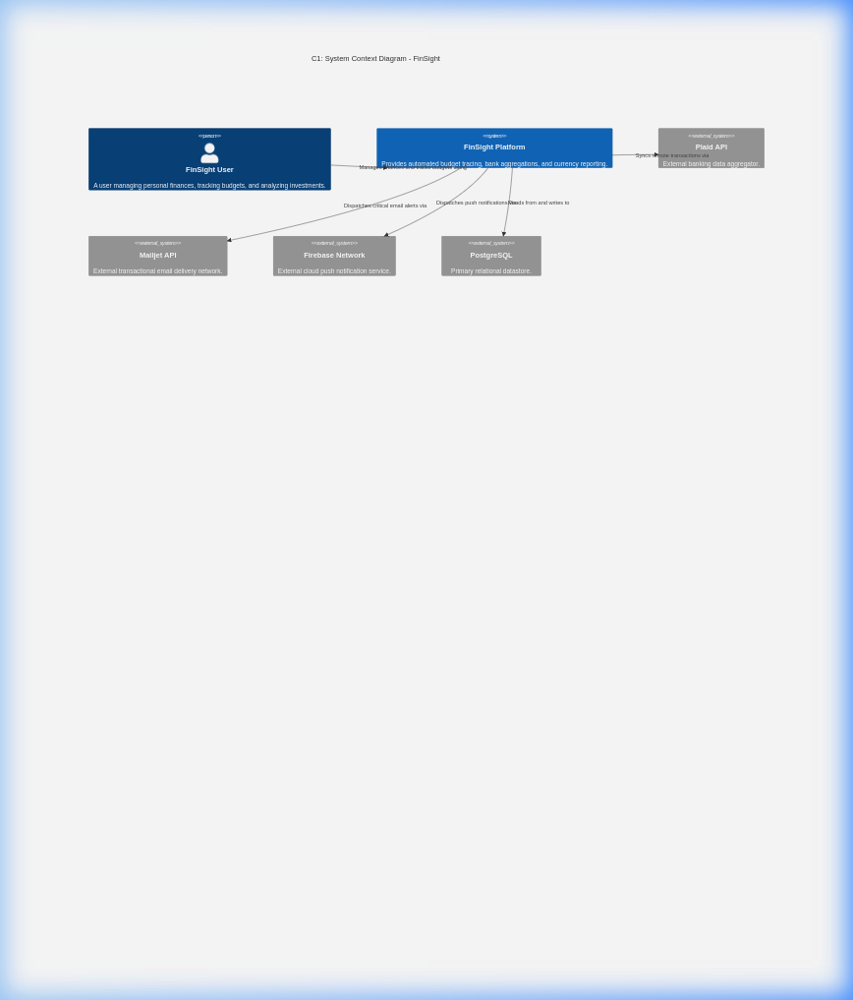
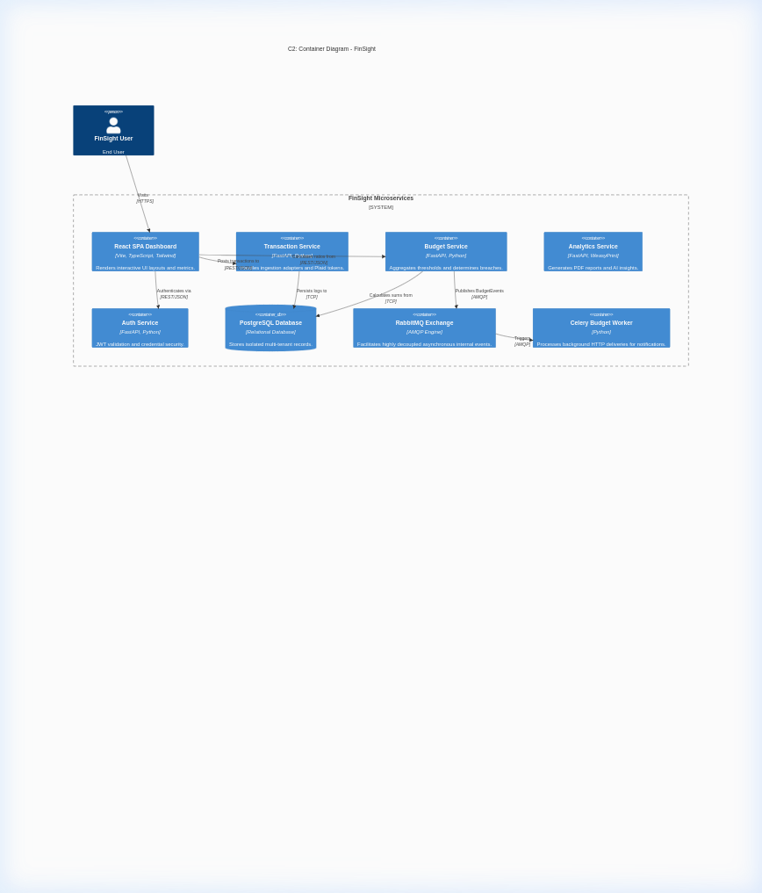
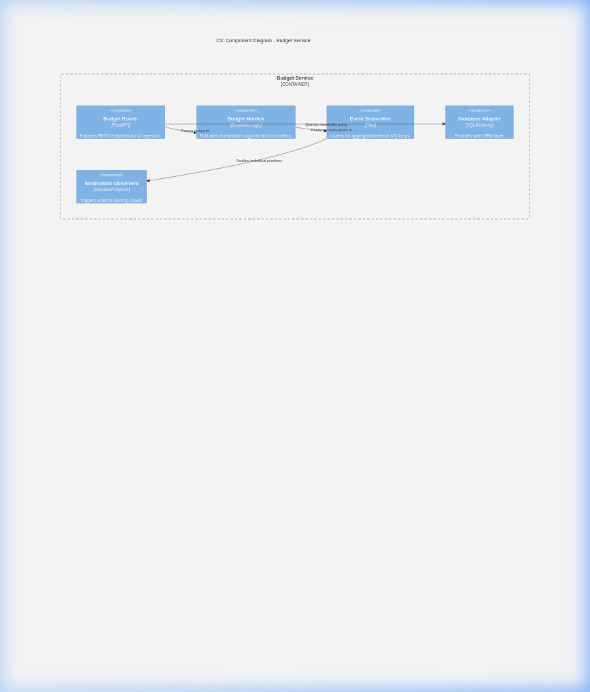

CS6.401 Software Engineering | Submitted by: Team 6 Project Repository: https://github.com/GojoSaturo0409/FinSight
| Member | Responsibility |
|---|---|
| Ananth | Frontend Development & UI Engineering |
| Lokesh | Analytics Pipeline & Data Visualization |
| Eshwar | Core Business Logic & Microservice Architecting |
| Rahul | Core Logic, API Integrations & Systems Integration |
| Ayush | Core Logic, API Integrations & Systems Integration |
| ID | Requirement | Architecturally Significant? | Rationale |
|---|---|---|---|
| FR-1 | Users can register, log in, and receive JWT-based session tokens | Yes | Drives the Auth Service boundary; every other service depends on token validation |
| FR-2 | Users can ingest transactions from Plaid (bank), CSV uploads, or manual entry | Yes | Necessitates the Adapter & Factory patterns for multi-source normalization |
| FR-3 | The system evaluates spending against user-defined budget limits per category | Yes | Core trigger for the Observer + Pub/Sub notification pipeline |
| FR-4 | Budget breaches dispatch email (Mailjet) and push (Firebase) notifications | Yes | Requires asynchronous processing via Celery workers to avoid blocking the API |
| FR-5 | Users can buy/sell investment equities and view portfolio value | No | Standard CRUD mapped to the Analytics Service |
| FR-6 | AI-powered spending recommendations are generated from transaction history | No | Leverages Chain of Responsibility for sequential analysis handlers |
| FR-7 | Monthly PDF reports are exportable with embedded charts | Yes | Requires WeasyPrint system-level dependencies inside Docker |
| FR-8 | All monetary values are globally convertible across currencies (USD, EUR, INR…) | Yes | Drives the Chain of Responsibility fallback for live/cached/hardcoded rates |
| ID | Requirement | Quality Attribute |
|---|---|---|
| NFR-1 | Budget alerts must be delivered within 5 seconds of a breach event | Performance |
| NFR-2 | Adding a new data source (e.g., Stripe) must require only a single new Adapter class | Modifiability |
| NFR-3 | The notification pipeline must not block the main API response | Availability |
| NFR-4 | Currency conversion must succeed even if the external API is offline | Fault Tolerance |
| NFR-5 | Each user’s data must be strictly isolated from other users | Security |
| Subsystem | Technology | Role |
|---|---|---|
| Auth Service | FastAPI, JWT, bcrypt | User registration, login, password hashing, and token issuance |
| Transaction Service | FastAPI, Plaid SDK, SQLAlchemy | Multi-source transaction ingestion, normalization via Adapters, and currency conversion |
| Budget Service | FastAPI, Pika (RabbitMQ) | Budget limit management, threshold evaluation, and event publishing |
| Analytics Service | FastAPI, WeasyPrint, Chart.js | AI recommendations, investment portfolio CRUD, and PDF report generation |
| Budget Worker | Celery, RabbitMQ | Asynchronous consumer that dispatches Mailjet emails and Firebase push notifications |
| API Gateway | Nginx | Unified reverse-proxy routing all /api/* traffic to appropriate microservices |
| Frontend SPA | React 18 (Vite), TypeScript | Interactive dashboard rendering charts, tables, budget sliders, and investment panels |
| Database | PostgreSQL 15 | Centralized relational store for Users, Transactions, Budgets, and Investments |
| Message Broker | RabbitMQ | AMQP fanout exchange for decoupled event broadcasting between services |
| Stakeholder | Concerns | Viewpoint | View |
|---|---|---|---|
| End User | Usability, data accuracy, real-time alerts | Functional | Dashboard UI, notification emails |
| Developer | Modifiability, testability, clear service boundaries | Development | C2 Container Diagram, codebase structure |
| DevOps | Deployability, containerization, monitoring | Deployment | Docker Compose topology, Nginx gateway |
| Security Auditor | Data isolation, credential management, JWT security | Security | Auth flow, .env separation, .gitignore rules |
| Field | Detail |
|---|---|
| Status | Accepted |
| Context | Budget evaluations were originally synchronous inside the API loop. If Mailjet or Firebase responded slowly, the entire user request would block, degrading UX. |
| Decision | Introduce RabbitMQ as a fanout exchange and Celery as the background worker. The Budget API publishes
lightweight budget_event messages; the Celery worker asynchronously consumes them and dispatches
alerts. |
| Consequences | API response times became independent of third-party latency. Trade-off: adds operational complexity (RabbitMQ container, Celery process). |
| Field | Detail |
|---|---|
| Status | Accepted |
| Context | The system ingests data from Plaid (nested JSON with accounts & transactions), CSV files (flat rows), and manual UI forms (simple key-value). Handling all formats in a single router method was unmaintainable. |
| Decision | Define an ITransactionSource interface. Implement PlaidAdapter,
CSVAdapter, and ManualEntryAdapter that each normalize raw data into a unified
Dict[str, Any] schema before DB persistence. |
| Consequences | Adding a new source (e.g., Stripe) requires only one new class implementing
fetch_transactions(). Zero changes to the router or DB layer. |
| Field | Detail |
|---|---|
| Status | Accepted |
| Context | External currency APIs (exchangerate-api.com) are subject to rate-limiting and downtime. A single point of failure in conversion would break transaction ingestion entirely. |
| Decision | Engineer a three-stage chain: (1) Check in-memory/Redis cache → (2) Query live API → (3) Fall back to hardcoded constant rates. Each handler either resolves the request or passes it to the next. |
| Consequences | 100% fault tolerance for currency conversion. Trade-off: hardcoded rates may be slightly stale during extended API outages. |
| Field | Detail |
|---|---|
| Status | Accepted |
| Context | Delivering budget alerts required importing Mailjet SDK, Firebase Admin SDK, and file-logging logic directly
inside the BudgetMonitor, creating tight coupling. |
| Decision | Implement the Observer pattern. BudgetMonitor maintains a list of Observer
instances (EmailNotifier, InAppNotifier, LoggingObserver). On threshold
breach, it iterates and calls observer.update(category, threshold, spend, level). |
| Consequences | Adding a new channel (e.g., Twilio SMS) requires zero modifications to BudgetMonitor; simply
append a new observer. |
| Field | Detail |
|---|---|
| Status | Accepted (Pragmatic Compromise) |
| Context | Pure microservice orthodoxy dictates separate databases per service. However, the Budget Service needs to
join transactions with budgets, and Analytics needs access to all tables for report
generation. |
| Decision | Use a single PostgreSQL instance with logical separation via SQLAlchemy ORM models scoped by
user_id. Each service accesses only its relevant tables through filtered queries. |
| Consequences | Eliminates costly inter-service REST calls for data aggregation. Trade-off: services share a schema, which could lead to unintended coupling if not disciplined. |
| # | Tactic | Quality Attribute | Implementation |
|---|---|---|---|
| 1 | Asynchronous Messaging | Performance, Availability | Budget events are published to RabbitMQ and consumed by Celery workers, ensuring the main API never blocks on third-party I/O. |
| 2 | Failover Chain | Fault Tolerance | Currency conversion uses a Cache → Live API → Hardcoded fallback chain, guaranteeing conversion succeeds even during API outages. |
| 3 | Authentication Gateway | Security | All API endpoints (except /auth/register and /auth/login) require a valid JWT
token verified via Depends(get_current_user), ensuring strict access control. |
| 4 | Data Isolation by User ID | Security, Integrity | Every database query is filtered by current_user.id, preventing cross-tenant data leakage even
within the shared database. |
| 5 | Containerized Deployment | Deployability, Portability | All services, databases, and brokers are containerized via Docker Compose, enabling single-command deployment on any environment. |
The Adapter pattern normalizes heterogeneous external data into a unified internal schema.
UML Class Diagram:

Sequence Diagram — Multi-Source Ingestion via Adapter:

The Observer pattern decouples the budget evaluation engine from the specific notification channels.
UML Class Diagram:
(Refer to the UML Class Diagram in Section 3.2 above, which shows the full Observer hierarchy including BudgetMonitor, EmailNotifier, InAppNotifier, and LoggingObserver.)
Sequence Diagram — Budget Breach Notification Flow:

The end-to-end non-trivial functionality implemented is the Budget Breach Notification Pipeline:
User sets a budget limit → Adds a transaction exceeding that limit → System evaluates the breach → Publishes an event to RabbitMQ → Celery worker asynchronously dispatches a real email via Mailjet and a push notification via Firebase.
This flow exercises: REST APIs, database queries, the Observer pattern, Pub/Sub messaging, and two external API integrations — making it a comprehensive E2E demonstration.



We compare our implemented Event-Driven Microservices architecture against a Monolithic alternative across two non-functional requirements.
| Metric | Monolithic (Synchronous) | Microservices (Async via Celery) |
|---|---|---|
| POST /budget/evaluate-auto response | ~2800 ms (blocks on Mailjet + Firebase round-trips) | ~120 ms (publishes event to RabbitMQ and returns immediately) |
| Notification delivery latency | Same as above (coupled) | ~3200 ms (handled asynchronously by worker, invisible to user) |
Analysis: In the monolith, the API handler must sequentially call Mailjet (avg 1.2s) and Firebase (avg 0.8s) before returning. Our architecture offloads these to the Celery worker, reducing perceived latency by ~95%. The trade-off is eventual consistency: the user gets an instant “success” but the email arrives 2–3 seconds later.
| Metric | Monolithic | Microservices + Observer |
|---|---|---|
| Files modified to add SMS alerts | 3+ (router, evaluation logic, imports) | 1 (create SMSNotifier class implementing Observer.update()) |
| Risk of regression | High (touching core logic) | None (existing observers are untouched) |
| Lines of code changed | ~40–60 | ~15–20 (new file only) |
Analysis: The Observer pattern in our architecture provides strict Open/Closed Principle
compliance. Adding Twilio SMS would involve creating a single SMSNotifier class and appending it to the
observer list — zero modifications to BudgetMonitor, router.py, or any existing notifier.
| Aspect | Monolith | Event-Driven Microservices |
|---|---|---|
| Simplicity | Yes — Single deployment unit | No — Multiple containers, RabbitMQ, Celery |
| Response time | No — Coupled to external APIs | Yes — Decoupled, sub-200ms responses |
| Modifiability | No — Tight coupling | Yes — Open/Closed via patterns |
| Operational cost | Yes — Low | No — Higher (more infra to manage) |
| Fault isolation | No — One failure crashes all | Yes — Worker failures don’t affect API |